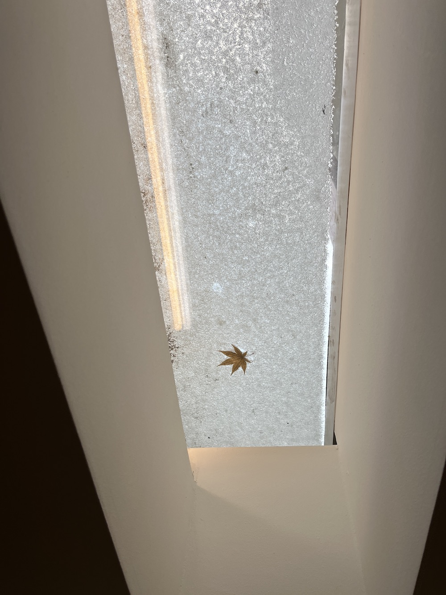
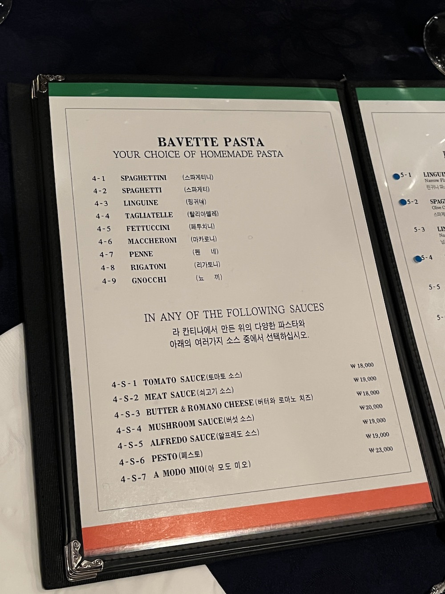
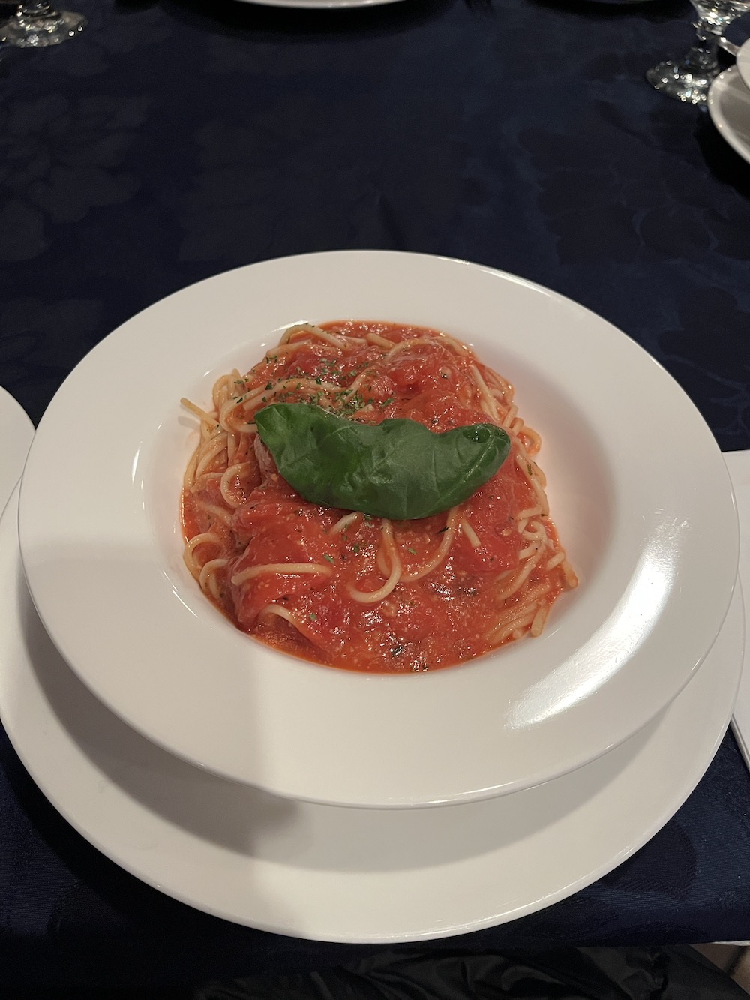
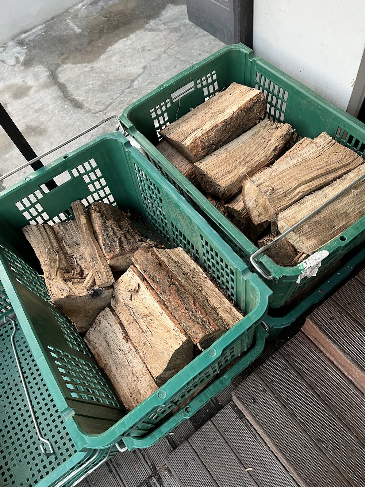
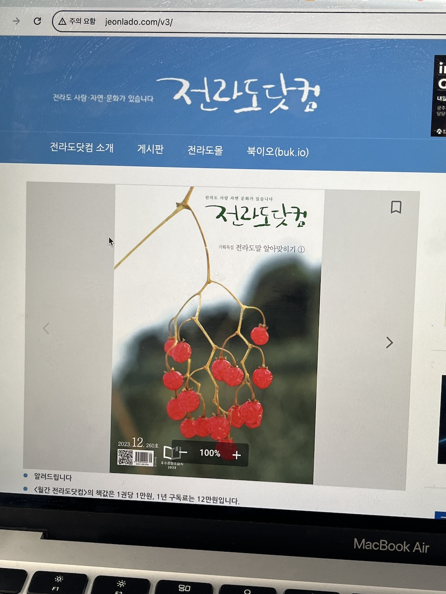
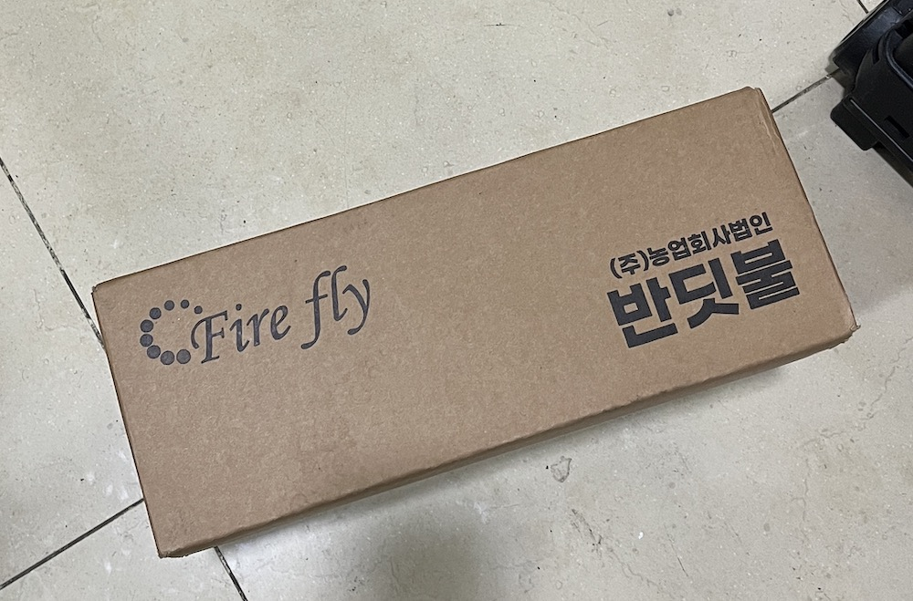
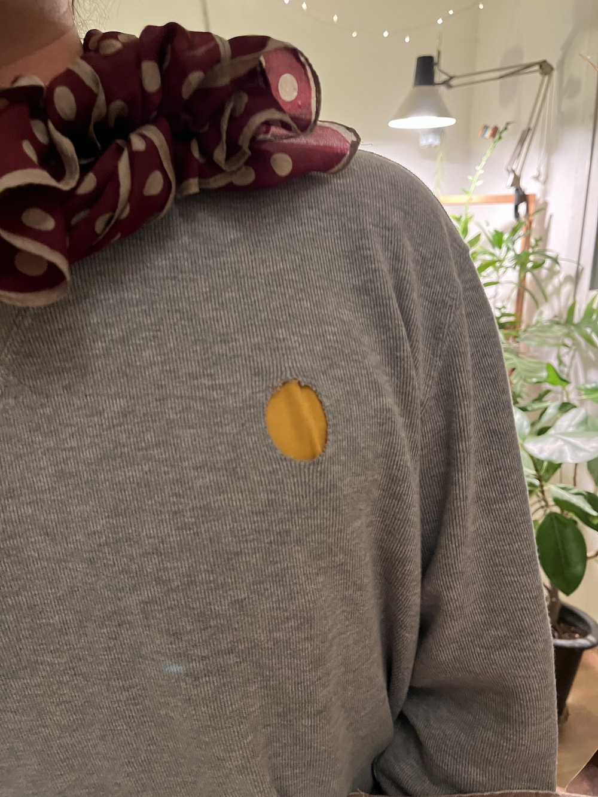
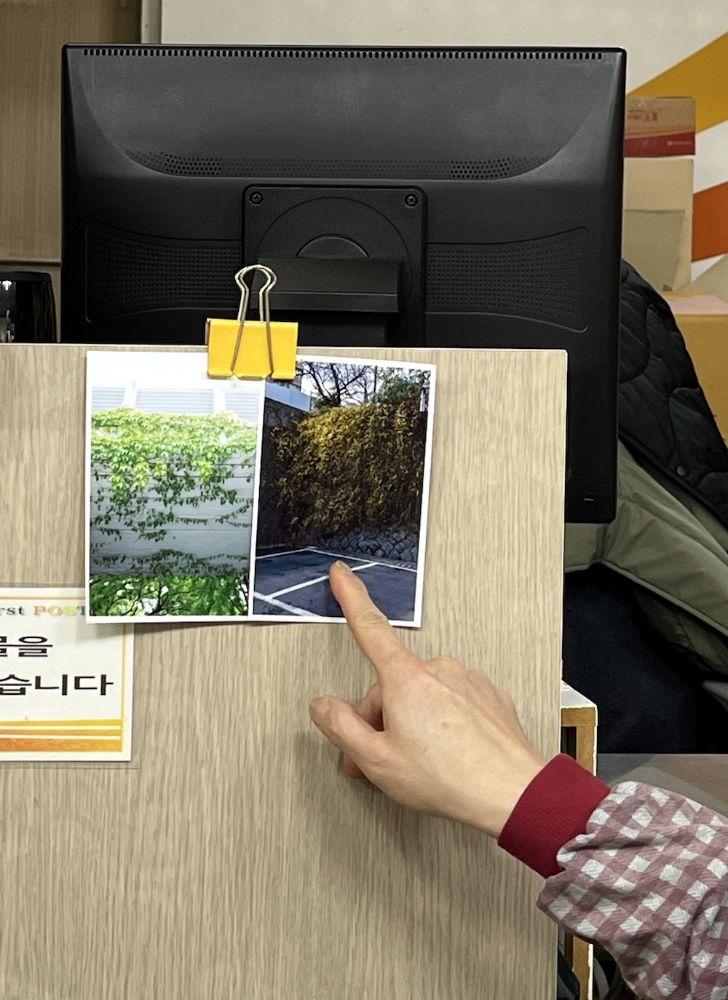

Hi all! Here goes the first quarter of Jisu's 2024.

A narrow rectangular window on the ceiling on a snowy day. Jisu spotted a maple leaf sealed with a sheet of snow. And it reminded Jisu of Elliott Cost's Leaf Camera.

Menu at an italian restaurant Jisu went for lunch. You have to choose two things. 1. Shape of pasta 2. Type of sauce.

Jisu likes simple flavors. So Jisu chose spaghetti and tomato sauce that looked like an spaghetti emoji🍝. Adriana Gallo who made pasta.guide would love this place!

One of Jisu and Won's favorite restaurants in Seoul is Buzza Pizza. At Buzza Pizza, they have a wood-fired oven and they have spare tree logs outside. Reminded Jisu of her recent found website, a funny web-log, logging.zone.

Amu Song mentioned about jeonlado.com. It is a local magazine of 'Jeonla' province in Korea. Jisu loved the cover of December 2023 issue.

On a parcel, there was a logo that says 'Fire Fly'. And of course it reminded Jisu of firefly sanctuary by Laurel Schwulst.(It's gone now. So Jisu found the last capture on wayback machine.)

Once had a dinner with Diana Band. And Duho, had this circular window on his sweater. Jisu asked why and he said it is a Ralph Lauren sweater and he hated the logo so he cut it out. Jisu loves how the color would change with the t-shirt he wears under. Very very similar to this website by Elliott.

At the post office, Jisu found two photos clipped on the wall and asked who took them. And the officer said there is an old man who likes to take photos comes and gives out photos once in a while. Jisu would love to make a website for him.